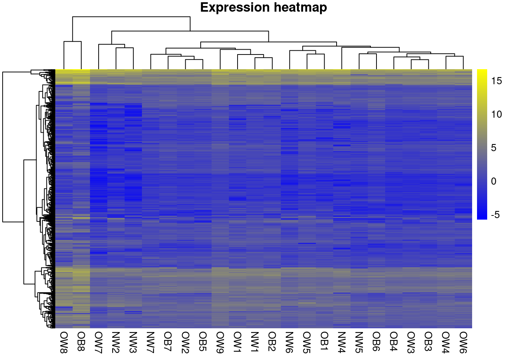
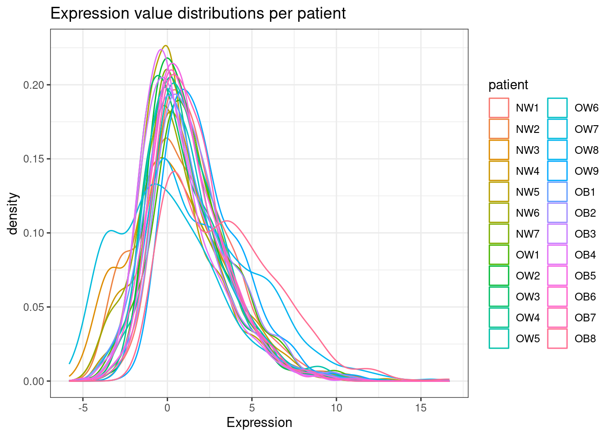
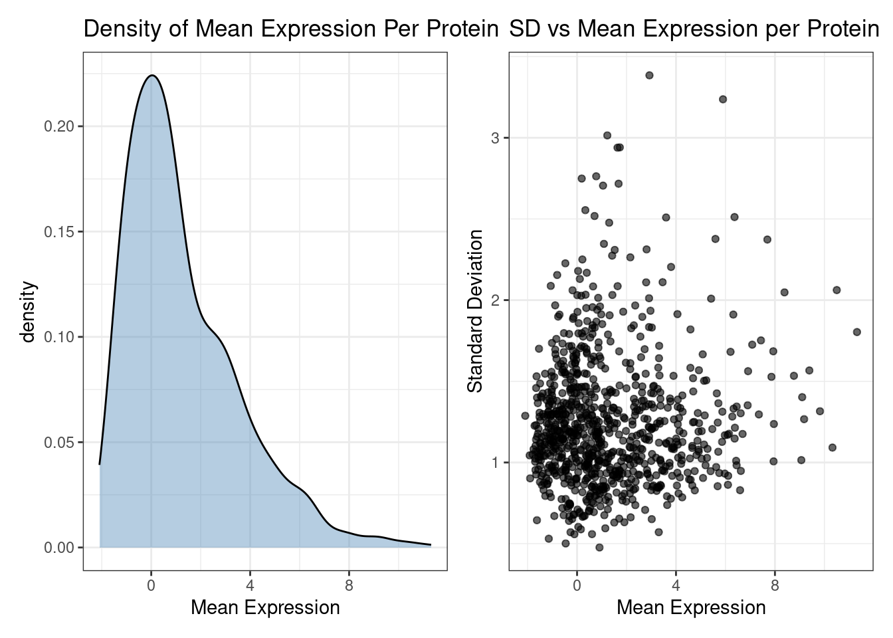

Code
# Load required packages
library(dplyr)
library(tidyr)
library(pheatmap)
library(ggplot2)
library(reshape2)
library(patchwork)
library(ggrepel)Collaboration with the Bio-Chemistry group
# Load required packages
library(dplyr)
library(tidyr)
library(pheatmap)
library(ggplot2)
library(reshape2)
library(patchwork)
library(ggrepel)pr_ALL <- readxl::read_xlsx("2025PROT002-70.xlsx")New names:
• `` -> `...77`
• `` -> `...78`# Filter the columns of interest
expr_ALL <- pr_ALL[,!is.na(as.matrix(pr_ALL)[1,])]
# Set column and row names
colnames(expr_ALL) <- expr_ALL[1,]
# Remove first row from datasets
expr_ALL <- expr_ALL[2:nrow(expr_ALL),]
# Convert expr matrix in numeric
expr_ALL <- sapply(expr_ALL, as.numeric)
row.names(expr_ALL) <- pr_ALL$`Protein IDs`[!is.na(pr_ALL$`Protein IDs`)]
# Create the meta-data matrix for proteins
meta_pr <- pr_ALL[2:nrow(expr_ALL),is.na(as.matrix(pr_ALL)[1,])]
# Create the meta-data matrix for patients
meta_pat <- readxl::read_xlsx("Secretoma Ob per Lipid Proteo i AC16.xlsx")Warning: Expecting numeric in D4 / R4C4: got a dateNew names:
• `` -> `...1`# Correct colnames
colnames(meta_pat)[1] <- "id"
# Read the Raw protein table
raw_pr <- read.table("proteinGroups.txt", sep = "\t", header = TRUE)
# Remove NA rows and Add grouping variable
meta_pat <- meta_pat %>%
dplyr::filter(!is.na(id)) %>%
dplyr::mutate(group = as.factor(toupper(substr(id, 1,2))),
Sexo = as.factor(Sexo),
Otros = as.factor(Otros),
# Correct the meta_pat ID to make the same as expr_ALL
id = as.factor(paste0(group, tidyr::extract_numeric(id))),
)extract_numeric() is deprecated: please use readr::parse_number() insteadsummary(meta_pat) id Num Edad IMC Sexo
NW1 : 1 Min. : 1.00 Min. :35.00 Min. : 19.00 F: 7
NW2 : 1 1st Qu.: 17.25 1st Qu.:61.50 1st Qu.: 25.41 M:17
NW3 : 1 Median : 70.50 Median :68.50 Median : 27.75
NW4 : 1 Mean : 63.67 Mean :64.62 Mean : 1891.62
NW5 : 1 3rd Qu.: 92.75 3rd Qu.:72.00 3rd Qu.: 32.50
NW6 : 1 Max. :138.00 Max. :75.00 Max. :44733.00
(Other):18
Otros group
DM : 9 NW:7
NA's:15 OB:8
OW:9
meta_pat$IMC[meta_pat$id == "NW3"] <- 21.6
summary(meta_pat) id Num Edad IMC Sexo Otros
NW1 : 1 Min. : 1.00 Min. :35.00 Min. :19.00 F: 7 DM : 9
NW2 : 1 1st Qu.: 17.25 1st Qu.:61.50 1st Qu.:25.00 M:17 NA's:15
NW3 : 1 Median : 70.50 Median :68.50 Median :27.35
NW4 : 1 Mean : 63.67 Mean :64.62 Mean :28.64
NW5 : 1 3rd Qu.: 92.75 3rd Qu.:72.00 3rd Qu.:31.55
NW6 : 1 Max. :138.00 Max. :75.00 Max. :39.00
(Other):18
group
NW:7
OB:8
OW:9
pheatmap(expr_ALL,
color = colorRampPalette(c( "blue", "yellow"))(100),
cluster_rows = TRUE, cluster_cols = TRUE,
show_rownames = FALSE, show_colnames = TRUE,
main = "Expression heatmap")
# Add probe IDs as a column
exprs_ALL_df <- data.frame(Protein = rownames(expr_ALL), expr_ALL)
# Melt the data frame into long format
expr_long <- reshape2::melt(exprs_ALL_df, id.vars = "Protein", variable.name = "patient", value.name = "Expression")
# Density plot
ggplot(expr_long, aes(x = Expression, color = patient)) +
geom_density() +
theme_bw() +
ggtitle("Expression value distributions per patient")
# Compute mean and SD across patients for each protein
protein_stats <- exprs_ALL_df %>%
tidyr::pivot_longer(-Protein, names_to = "patient", values_to = "Expression") %>%
dplyr::group_by(Protein) %>%
dplyr::summarise(
mean_expr = mean(Expression, na.rm = TRUE),
sd_expr = sd(Expression, na.rm = TRUE)
)
# Density plot of mean expression values
a <- ggplot(protein_stats, aes(x = mean_expr)) +
geom_density(fill = "steelblue", alpha = 0.4) +
theme_bw() +
ggtitle("Density of Mean Expression Per Protein") +
xlab("Mean Expression")
# Scatter plot: SD vs mean per protein
b <- ggplot(protein_stats, aes(x = mean_expr, y = sd_expr)) +
geom_point(alpha = 0.6) +
theme_bw() +
ggtitle("SD vs Mean Expression per Protein") +
xlab("Mean Expression") +
ylab("Standard Deviation")
a | b
Check if there is any principal component that shows a difference between any of the covariables.
# Ensure metadata is ordered to match expression matrix
meta_pat <- meta_pat[match(colnames(expr_ALL), meta_pat$id), ]
# Transpose so samples are rows for PCA
pca_res <- prcomp(t(expr_ALL), scale. = TRUE)
# build PCA dataframe
pca_df <- data.frame(
PC1 = pca_res$x[, 1],
PC2 = pca_res$x[, 2],
PC3 = pca_res$x[, 3],
PC4 = pca_res$x[, 4],
id = meta_pat$id,
group = meta_pat$group,
Sexo = meta_pat$Sexo,
Otros = meta_pat$Otros,
Edad = meta_pat$Edad
)
# Create PC pairs
pc_pairs <- list(
c("PC1","PC2"),
c("PC1","PC3"),
c("PC1","PC4"),
c("PC2","PC3"),
c("PC2","PC4"),
c("PC3","PC4")
)
# Meta variables
color_vars <- c("Sexo", "Otros", "Edad", "group")
# Function to create pca_plot
make_pca_plot <- function(df, pcs, color_var) {
ggplot(df, aes_string(x = pcs[1], y = pcs[2], color = color_var)) +
geom_point(size = 3) +
geom_text_repel(aes(label = id), size = 3) +
theme_bw() +
ggtitle(paste0(pcs[1], " vs ", pcs[2], " colored by ", color_var)) +
xlab(paste0(pcs[1], " (", round(summary(pca_res)$importance[2, as.numeric(substr(pcs[1],3,3))] * 100, 1), "%)")) +
ylab(paste0(pcs[2], " (", round(summary(pca_res)$importance[2, as.numeric(substr(pcs[2],3,3))] * 100, 1), "%)"))
}
# Generate plot list
plots <- list()
# Create each pca plot
for (pc in pc_pairs) {
for (colvar in color_vars) {
p <- make_pca_plot(pca_df, pc, colvar)
plots <- append(plots, list(p))
}
}Warning: `aes_string()` was deprecated in ggplot2 3.0.0.
ℹ Please use tidy evaluation idioms with `aes()`.
ℹ See also `vignette("ggplot2-in-packages")` for more information.# Combinar todos los gráficos en una cuadrícula
final_plot <- wrap_plots(plots, ncol = 2)
# Save PCA plots
ggsave("PCA_all_combinations.png",
final_plot,
width = 16, height = 40, dpi = 300)